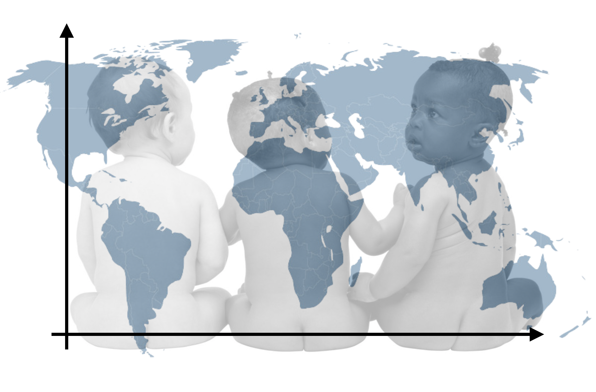

Assignment 05
INTRODUCTION TO MULTIPLE REGRESSION
Human overpopulation is a growing concern and has been associated with depletion of Earth’s natural resources (water is a big one) and degredation of the environment. This, in turn, has social and economic consequences such as global tension over resources such as water and food, higher cost of living and higher unemployment rates.
Fertility rate is a measure directly linked to population and has been useful to explore hypotheses about factors related to combating overpopulation. For this assignment, you will use the file fertility.csv to fit three models in order to explore three hypotheses about the effects of contraceptive use on fertility rates.
Instructions
The hypotheses you will examine are:
- Hypothesis 1: Contraception use in a country is thought to be negatively associated with fertility rates.
- Hypothesis 2: Women in countries with higher infant mortality rates will, on average, have more children (higher fertility rates). Controlling for the infant mortality rate is important to gain a more accurate view of the effect of contraception use on fertility rate.
- Hypothesis 3: Contraception use is really a function of educating women, so after controlling for education there is no/little effect of contraception use on fertility rate. In this model we will also still control for infant mortality rates.
Submit your responses to each of the questions below in a PDF document. All graphics should be resized so that they do not take up more room than necessary and also should have an appropriate caption. This assignment is worth 16 points. (Each question is worth 1 point unless otherwise noted.)
Preparation
Begin by standardizing the fertility rate variable (outcome) and each of the three predictors used in the models listed above. Use the standardized variables to fit the regression models corresponding to each of the three hypotheses. You will use the output from the fitted models to answer the questions in the assignment.
Part I
Examine the structure and formatting of Table 4 at https://zief0002.github.io/musings/creating-tables-to-present-statistical-results.html. Mimic the format and structure of this table to create a table to present the pairwise correlations between the outcome and each of the predictors, and between each set of predictors. Make sure the table you create also has an appropriate caption. (2pts.)
Examine the structure and formatting of Table 9 at https://zief0002.github.io/musings/creating-tables-to-present-statistical-results.html. Mimic the format and structure of this table to create a table to present the numerical information from the three models you fitted in this assignment. Make sure the table you create also has an appropriate caption. If the table is too wide, change the page orientation in your word processing program to ``Landscape’’, rather than changing the size of the font. (2pts.)
Create a coefficient plot that graphically presents the coefficient estimates and the uncertainty (as 95% confidence intervals) for the coefficients included in the three fitted models. Be sure that the figure is appropriately captioned. (2pts.)
Based on results presented in the regression table and from the coefficient plot comment on the size and direction of the effect of contraceptive rate on fertility rate. Do this by referring to the standardized coefficient and the uncertainty in the parameter estimates. Note: Do not base your response on a p-value.
Use the results from Model 3 to answer the remainder of the questions on this assignment.
Part II
Report the regression equation from fitting Model 3. Use Equation Editor (or some other program that correctly types mathematical expressions) to typeset the equation correctly.
Using output from the ANOVA table, compute and report the value for the model \(R^2\). Show your work for full credit.
Interpret the value of the model \(R^2\) using the context of the data.
Using symbols, write the omnibus null hypothesis that is tested by the model-level F-statistic in this analysis in two different manners: (1) using the coefficient parameters used in the regression model, and (2) using the variance accounted for parameter.
Based on the results of the model-level F-test, does the model seem to explain variation in fertility rates? Explain. Note: Here you can use the p-value as evidence, but do not compare this to 0.05.
Interpret the estimated coefficient value associated with the partial effect of contraception.
Based on the 95% confidence interval for the partial effect of contraception on fertility rate, which parameter values are reasonably compatible with the empirical data? Explain what this implies about the magnitude of the partial effect.
Create a publication quality plot that displays the results from Model 3. For this plot, put the contraception predictor on the x-axis. Control out the effect of education level by setting this to the mean level of education. Display two separate lines to show the effect of infant mortality rate; a small and large rate based on the data. The two lines should be displayed using different linetypes or colors (or both) so that they can be easily differentiated in the plot. Be sure that the figure is appropriately captioned. (2pts.)